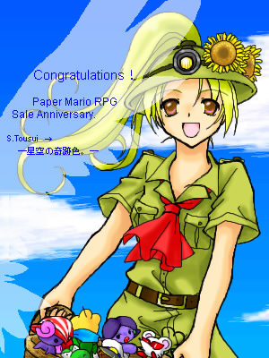

こんな物ですが、トロフィーがわりにどうぞです＾＾；
透水時雨さんのみ、保存及び転載が可能です。
というか、字が汚くてスイマセン･･･！orzそしてペパマリ発売一周年記念なのに四勇者ズですいませんです；
投票総数は、なんと７２票にもなりました･･！
ご協力ありがとうございます！
自分票（自分で自分に入れる）もあってしまった様なのが少し残念ですが；
とくにトラブルもなく、良い結果で終わることができたと思います＾＾
星空の奇跡色。
第一回お絵かきコンテスト結果発表！
さあ、とうとうこの第一回のコンテストの集計が完了しました！
皆様の投票によって選ばれたのは･･もうTOPに飾らせていただいていますが（笑）
透水時雨さんです！

ぢつは管理人も票入れてました･･（コラコラ）
獲得票数４２票という、堂々の優勝でした！
透水時雨さん、おめでとうございますｖ
ええと、そして優勝者の透水時雨さんには。
こんな物ですが、トロフィーがわりにどうぞです＾＾；
透水時雨さんのみ、保存及び転載が可能です。
というか、字が汚くてスイマセン･･･！orzそしてペパマリ発売一周年記念なのに四勇者ズですいませんです；
投票総数は、なんと７２票にもなりました･･！
ご協力ありがとうございます！
自分票（自分で自分に入れる）もあってしまった様なのが少し残念ですが；
とくにトラブルもなく、良い結果で終わることができたと思います＾＾
最後に、参加してくださった
エンジョウ様、ダブルバッテン様、舞季亞様、バサバサーニー様、ラグラ様、スーパーマリオ様、
ありがとうございました･･！
こちらのイラストをお受け取りくださいませｖ

上記の方のみ、保存及び転載が可能です。
大会を開くときがありましたら、また皆さんよろしくお願いいたします♪
２００５．９．１ 星詩里音